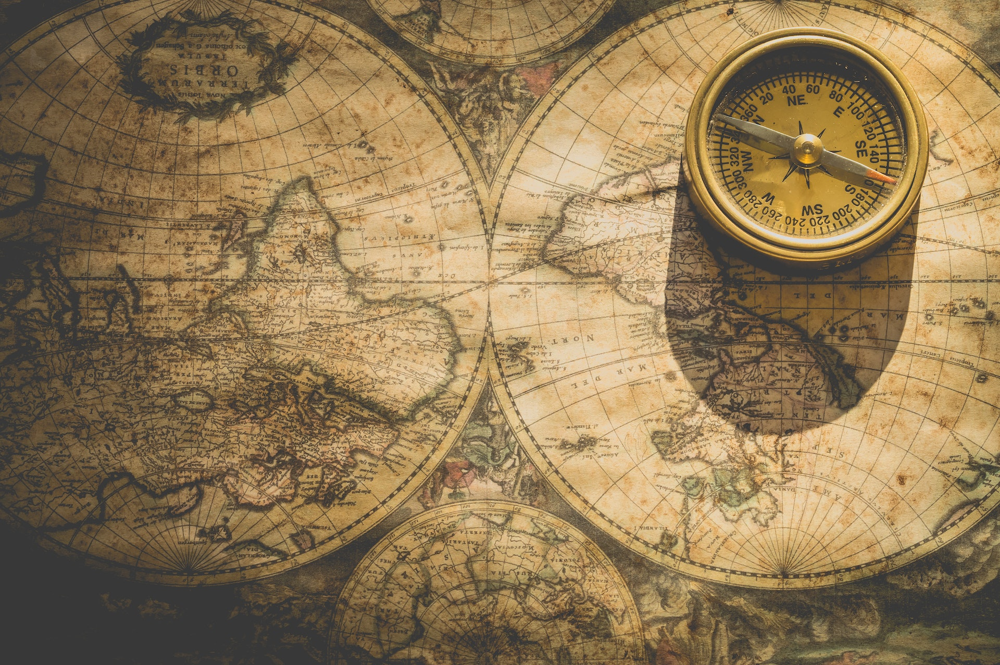
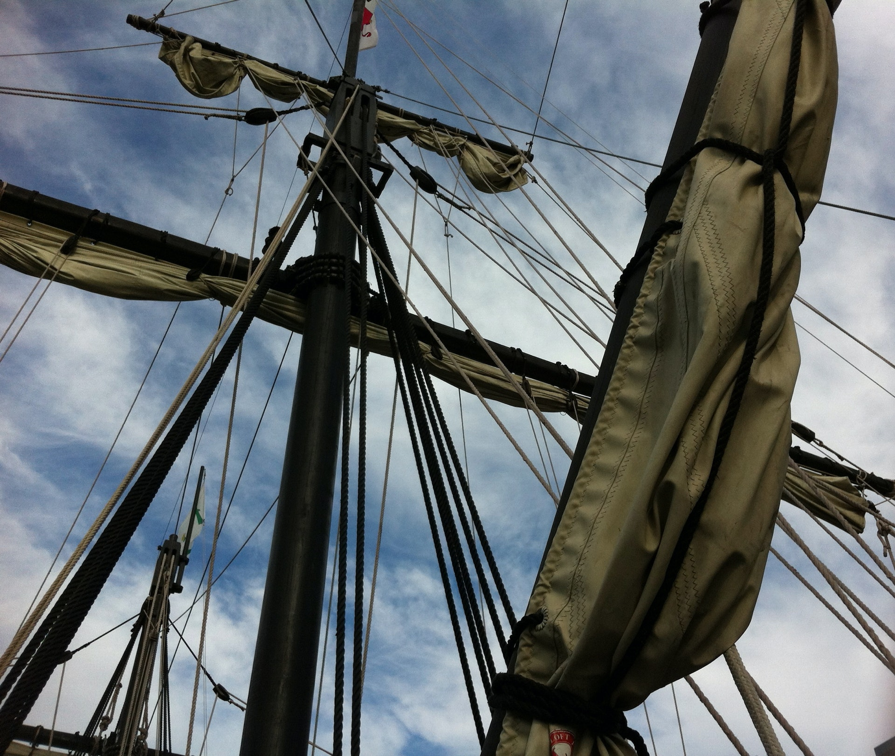

Valorizar o oceano e a vida que lá existe sempre trouxe benefícios para aqueles com paciência e determinação para pesquisar e aprender. Todas a ciência dos oceanos que temos hoje teve início das navegações, a navegação nos permite ter acesso a fontes de alimentos e nos dá maior mobilidade. Desde sempre os locais com maior domínio em construir embarcações tiveram maior vantagem sobre seus concorrentes.
O comércio no Mar Mediterrâneo é o primeiro local de onde se tem evidência direta de navegação (viagens marítimas com objetivo específico). Apesar dos egípcios praticarem o comércio pelo rio Nilo, os cretenses e os fenícios que tiveram um comercio regular marítimo. Eles utilizavam de simples embarcações, o que torna seus feitos muito incríveis. Os fenícios, que faziam o transporte através do Estreito de Gibraltar, para locais como a Grã-Bretanha e a costa oeste da África, acabaram tendo o domínio marítimo quando os cretenses foram destruídos por questões políticas e terremotos em 1200 a.C.
Os gregos começaram a explorar o oceano Atlântico por volta de 900 e 700 a.C. Eles observaram que existia uma corrente no sentido norte-sul, porém havia uma crença que apenas rios possuíam correntes, logo começaram a acreditar que esse espaço, onde não era possível ver a margem oposta, se tratava de um rio gigantesco. E assim como os gregos, os fenícios, apesar de suas habilidades, não se aventuravam para longe da costa. O nome dado para esse rio foi okeanos, a palavra oceano vem do latim oceanus.
Com o avanço das navegações, os navegadores começaram a registrar as informações, como rochas, pontos de referência, tempo de percurso, entre outros. Assim tornaram as viagens mais seguras e fáceis, provavelmente os primeiros a realizar esse serviço (chamados de cartógrafos, que desenham cartas) foram os comerciantes do Mediterrâneo por volta de 800 a.C. Atualmente, os mapas se referem as áreas terrestres e as cartas são usadas para o mar.
Não foi apenas no Mediterrâneo que a navegação se desenvolveu, outros povos também criaram suas cartas e embarcações. Os chineses (que serão mencionados na página de curiosidade) desenvolveram o sistema hidroviário extenso nos rios, quando interligados com o Oceano Pacífico tornavam o transporte a longa distância mais conveniente. Os povos da Polinésia tinham facilidade em se locomover entre as ilhas, e assim começaram a colonizar as ilhas centrais do Pacífico, por volta de 3.000 a.C. Sem terem contato, cada povo criou suas cartas e métodos de navegação.